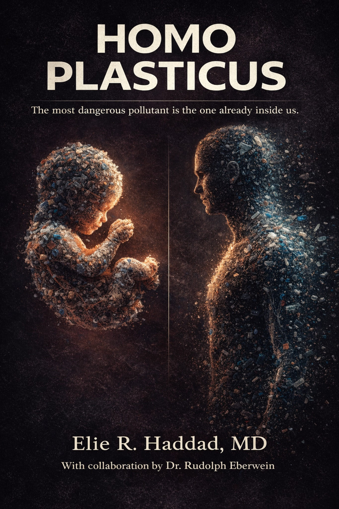

"The Most Dangerous Pollutant Is the One Already Inside Us."
A physician-led initiative dedicated to raising awareness about the effects of microplastics and nanoplastics on human health and our planet. The Complete Physician's Guide to Microplastics gives you the science, the context, and the practical tools to protect yourself and the people you love.
Secure checkout via Stripe. Receipt sent by email immediately.
What You Will Learn
This ebook is structured as a complete framework — from understanding the science to assessing your personal exposure to building a practical reduction strategy. It is written to be read cover-to-cover or used as a reference.
The Plastic Age
How plastic became the most successful material in history — and how a century of mass production turned a technological miracle into a planetary contamination event. The origin story of Homo plasticus.
The Exposome — Every Route In
A complete map of how microplastics and nanoplastics enter the human body — through water, food, air, skin, clothing, and even prenatal exposure. The concept of the plastics exposome explained.
The Brain Under Siege
Nanoplastics cross the blood-brain barrier. What happens when plastic reaches the brain — neuroinflammation, oxidative stress, behavioral changes, and what the latest research means for cognitive and mental health.
The Broken Heart — Cardiovascular Risk
The landmark 2024 NEJM study found patients with microplastics in arterial plaques had a 4.5× higher rate of heart attack and stroke. A cardiologist's in-depth analysis of the most consequential findings to date.
The Silent Collapse — Multi-Organ Effects
How microplastics damage the liver, kidneys, lungs, thyroid, and immune system — often without symptoms, often for decades. The systemic dimension of plastic exposure that medicine is only beginning to map.
The Fertility Crisis — Male Reproductive Health
Sperm counts have fallen more than 50% in Western populations over four decades. The evidence linking phthalates, BPA, and other plastic chemicals to testosterone disruption, infertility, and testicular health.
Female Health — Hormones, Fertility & Cancer Risk
Endocrine disruption from plastic chemicals affects the female reproductive system at every stage — from puberty to pregnancy to menopause. The links to PCOS, endometriosis, breast cancer, and early menopause.
The Fetus: A Blueprint Rewritten
Microplastics have been found in human placentas, amniotic fluid, and fetal organs. How plastic exposure before birth alters sexual development, the fetal brain, and — through epigenetic changes — even future generations.
The Rise of Homo Sanctus — Hope & Action
The path forward: personal sovereignty, the 12-step Quick Action Card, the 12-day reset plan, and the emergence of Homo sanctus — the conscious, regenerative human who chooses to protect life above convenience.
Appendix & Quick Action Card
The complete 12-step exposure reduction guide, the 3 core rules, and the 12-day reset plan. Action steps for individuals, parents, healthcare providers, and communities — fully referenced and ready to use.
Who This Book Is Written For
This book is for you if…
- You've heard about microplastics and want to understand the actual science
- You want practical, prioritized guidance — not overwhelming lists
- You are a parent concerned about your children's exposure
- You are pregnant or planning a pregnancy
- You prefer evidence-based information over wellness trends
- You want to reduce exposure without overhauling your entire life
- You value rigorous information presented without sensationalism
This book is not for you if…
- ✗ You are looking for a detox plan or alternative health protocol
- ✗ You prefer anecdotal or experiential sources over published research
- ✗ You want a medical diagnosis or treatment plan (please see your physician)
What Readers Are Saying
"Finally — a book on this topic that doesn't terrify you and doesn't oversimplify. Dr. Haddad writes like a physician who actually respects his readers' intelligence. I've recommended it to everyone I know."
"The exposure audit alone was worth the price. I had no idea about half the sources in my kitchen. The action plan is specific and doable. This is the book I've been looking for."
"I appreciated that Dr. Haddad is upfront about what we know, what we don't, and why the precautionary principle applies. It's refreshing to read something that's honest about scientific uncertainty."
"Read it in one evening. Then spent the next week going through every category in the house. My family drinks filtered water now, we switched our cookware, and our kids' school lunches are in stainless steel. Practical and important."
These reviews are illustrative placeholders. Replace with verified reader reviews when available.
About the Authors
Dr. Elie R. Haddad, MD is a cardiologist and cardiac electrophysiologist with over 20 years of clinical experience. A TEDx speaker and author of Whispers of the Keys, he founded Homo Plasticus after years of observing the accelerating convergence of plastic exposure science across cardiology, endocrinology, neurology, and reproductive medicine.
Dr. Rudolph Eberwein is a longevity specialist and physician who brings a preventive medicine perspective to the plastic crisis. Together, both physicians began this journey as fathers and healers — watching their patients get sicker, younger, and recognizing that genetics and lifestyle alone could not account for the scale of what they were seeing.
Homo Plasticus was born from that shared awakening: the conviction that transformation begins with awareness, and awareness begins with the unfiltered truth.
Frequently Asked About the Ebook
🔒 Secure checkout via Stripe
Not Ready to Buy? Start With the Free Resources.
Subscribe to the Homo Plasticus Dispatch and receive the free Exposure Audit PDF — no purchase required.
No spam. No obligation. Unsubscribe anytime.